Primer paso
Segundo paso
Tercer paso
- Imagenes de la Preparación
Cuarto paso
Lavamos las verduras y las troceamos a nuestro gusto. En este caso cortaremos las zanahorias, cebolla y ajo en brunoise, en daditos pequeños. El pimiento rojo lo cortamos en bastones finos y la berenjena en dados de 1-2 cm.
En una cazuela amplia calentamos un chorrito de aceite de oliva. Añadimos la cebolla, zanahoria, ajo y pimiento rojo. Reservaremos la berenjena para añadir después. Sofreímos las verduras a fuego medio-alto durante 6-7 minutos.
Cuando la verdura comience a ablandarse incorporamos la berenjena troceada y una pizca de sal. Seguimos cocinando las verduras, removiendo de vez en cuando, 5 minutos más a temperatura media-alta.
Añadimos la salsa de tomate y la integramos con las verduras. Cocinamos 5 minutos más. Mientras se cocinan las verduras, cocemos la pasta.
Primer paso
Segundo paso
Tercer paso
Cuarto paso
- Imagenes de la Preparación
Para ello cocemos la pasta, calentamos en una cazuela un litro de agua por cada 100 g de pasta. No será necesario añadir aceite de oliva al agua de cocción para que la pasta no se pegue.
Cuando el agua comience a hervir, echamos 1 puñado generoso de sal, unas 2 cucharadas rasas por cada 500 gramos de pasta. En ese momento añadimos los penne ziti rigate integral de una sola vez, todos juntos, y removemos por un momento con una cuchara de madera.
Cocemos la pasta durante 11 minutos para conseguir una pasta “al dente” o en su punto justo. Una vez que la pasta está cocida, la escurrimos inmediatamente.
Vertemos la pasta sobre las verduras y mezclamos bien para que se integren con todo su jugo y su sabor. Servimos al momento bien calentitos.


Tartar de Salmón y aguacate
Ingredientes
- 500g de salmón
- 1/2 cebolleta
- 1 aguacate maduro grande o 2 pequeños
- 30g de alcaparras
- 30g de pepinillos
- 1 cucharada pequeña de mostaza
- 2 cucharaditas de salsa Worcestershire o salsa Perrins
- 2 cucharadas de salsa de soja (opcional).
- Eneldo o cebollino fresco
- 5 cucharadas soperas de aceite de oliva virgen extra
- 1 cucharadita de Tabasco (opcional)
- Sal (a gusto, si lleva salsa de soja no echar)
- Pimienta negra recién molida (a gusto)
Preparación
- Preparación de la base del tartar
Primer paso
Segundo paso
Tercer paso
Cuarto paso
Quinto paso
Sexto paso
Séptimo paso
Octavo paso
Noveno paso
- Imagenes de la Preparación 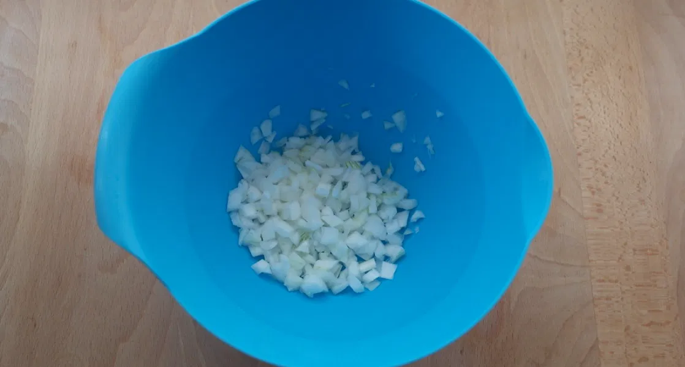 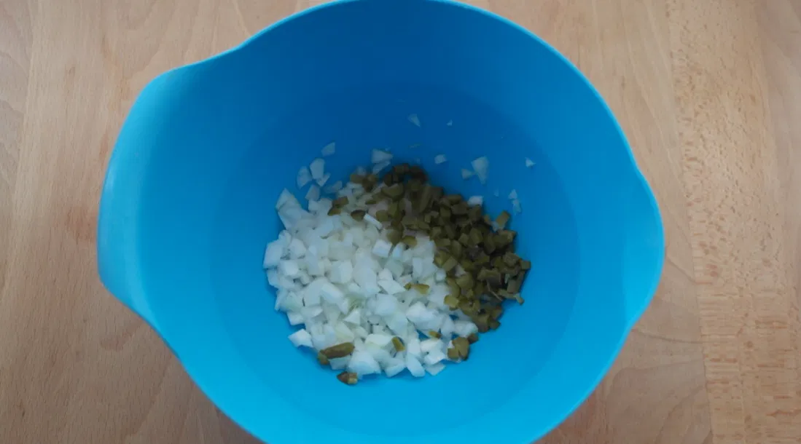 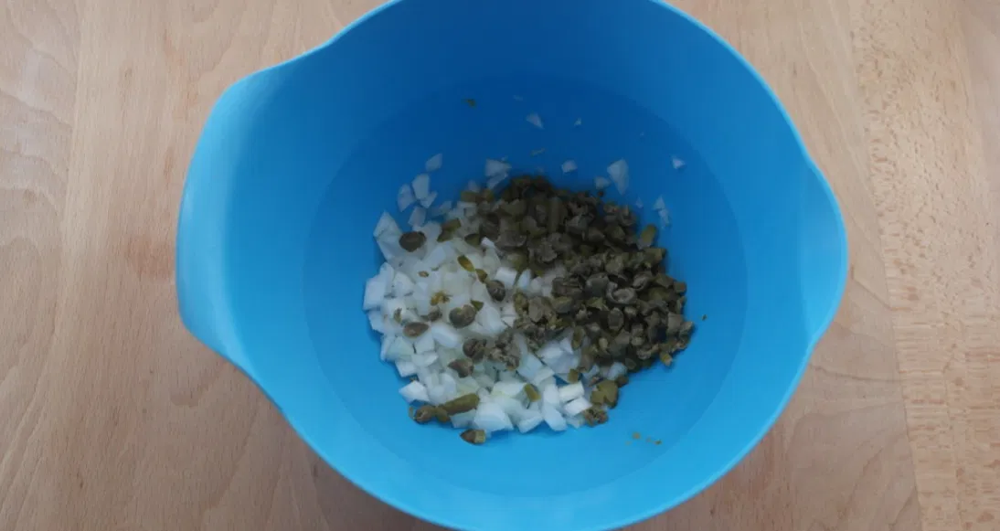 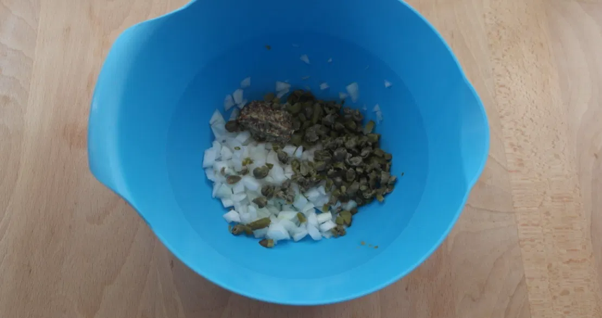 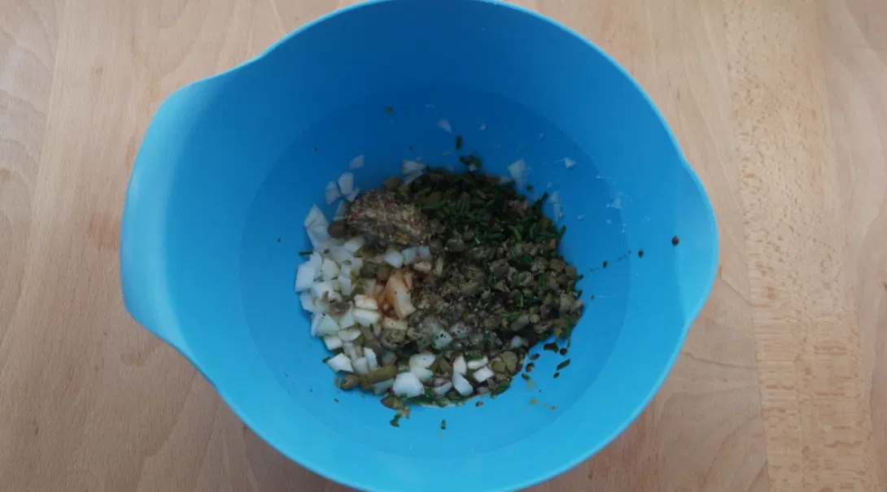 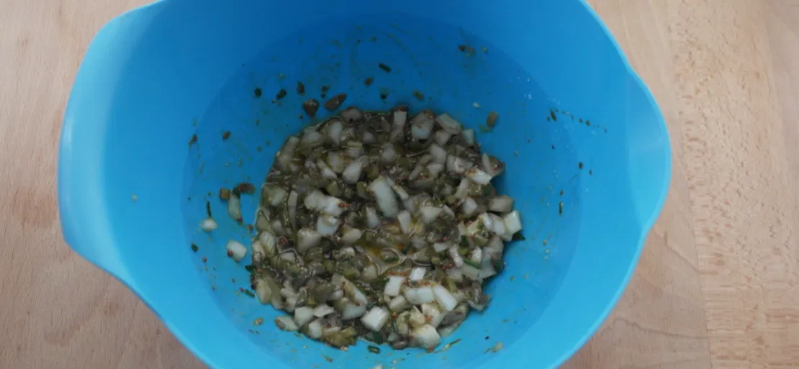 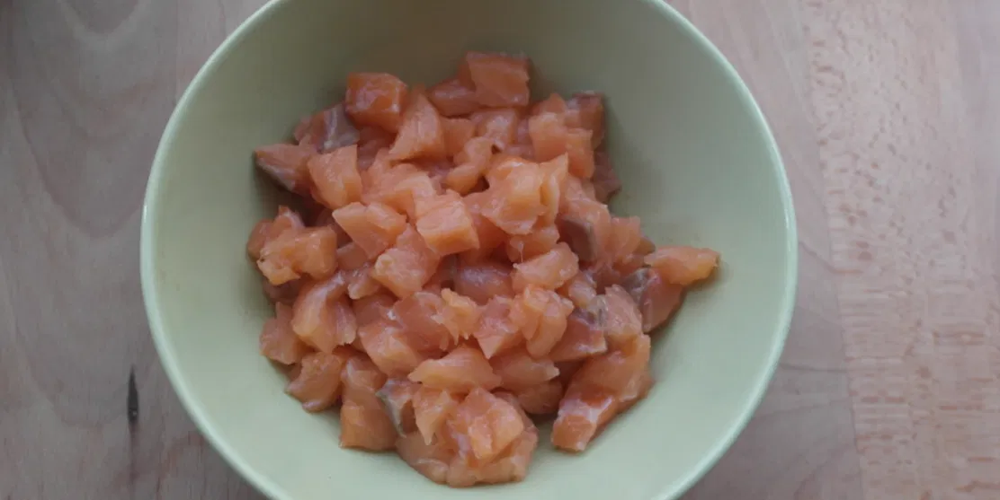 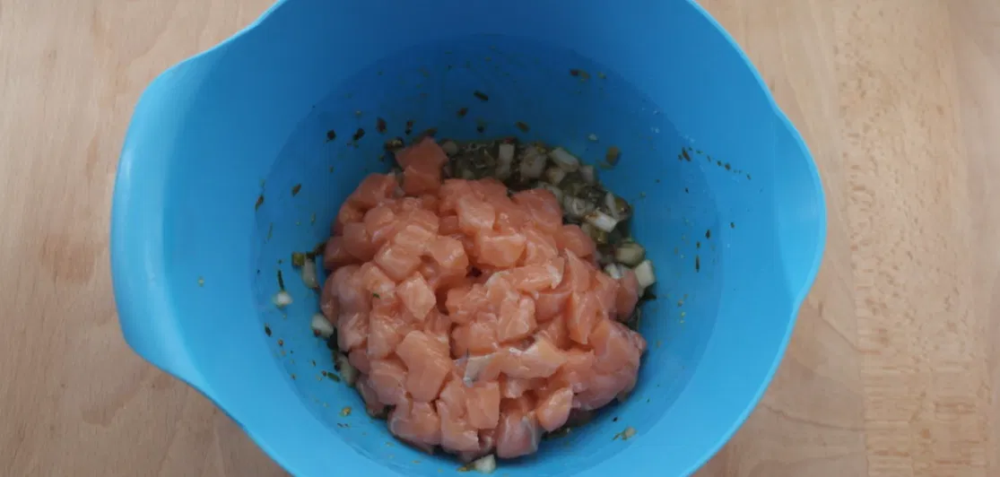 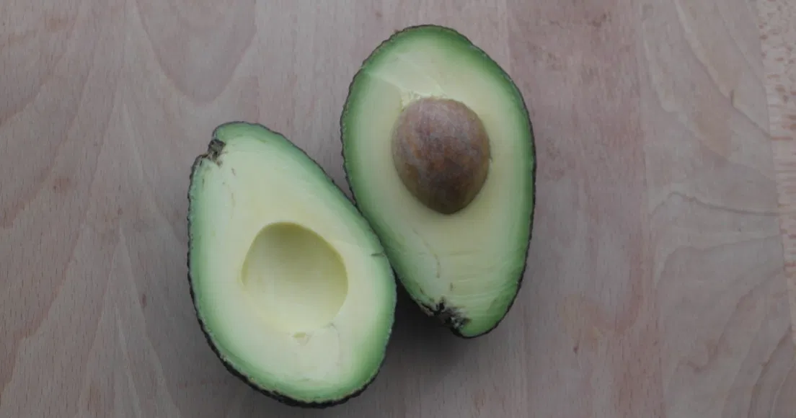 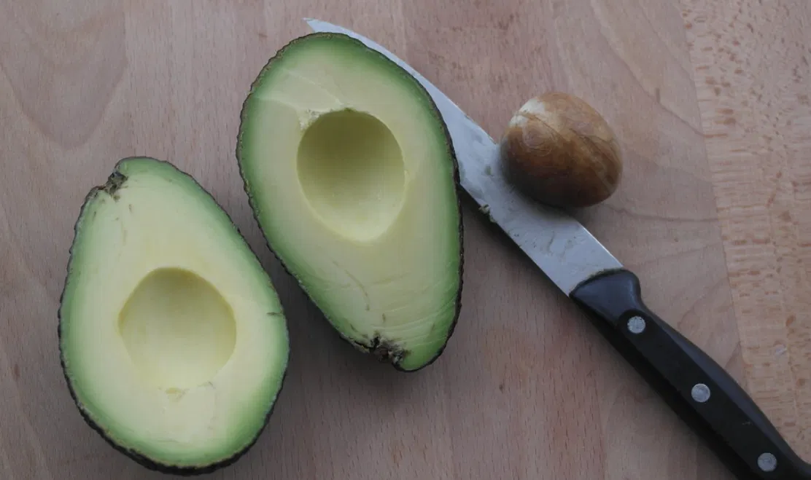 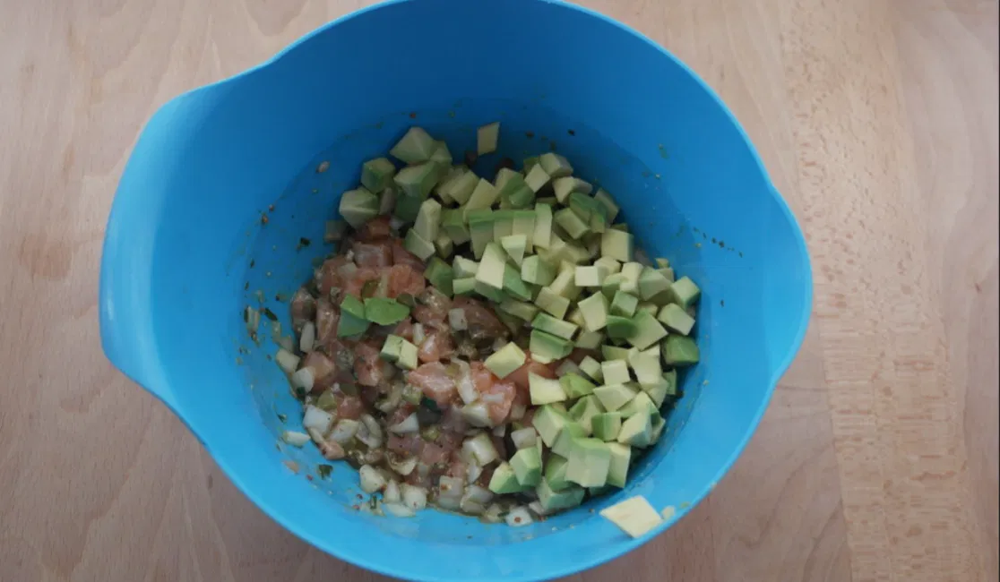
Primer paso
- Imagenes de la Presentación 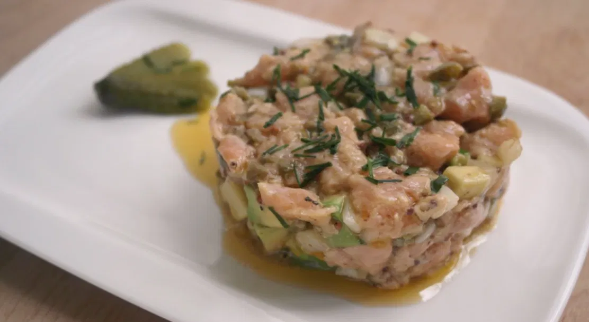
Limpiamos el lomo con un papel de cocina y retiramos la piel con la ayuda de un cuchillo afilado. Para evitar todo lo relacionado con el anisakis congelamos el lomo de salmón durante no menos de 48 horas.
Una vez descongelado, dejándolo fuera desde la noche anterior, le retiramos, en la medida de lo posible, las espinas que pueda tener. Reservamos.
Picamos la cebolleta muy fina y la ponemos en un bol amplio. Añadimos al bol las alcaparras, los pepinillos y la mitad del cebollino, todo troceadito. Mezclamos los ingredientes. Incorporamos a la mezcla anterior el aceite de oliva virgen extra, la salsa Worcesterchire, la mostaza, el tabasco (opcional), la salsa de soja (en este caso me gusta su sabor, aunque es opcional) y la pimienta negra molida.
Mezclamos bien y probamos. Es fundamental para saber el punto de sal, con la soja no creo que sea necesario añadirla, pero si fuese necesario le damos un punto más de sal.
Troceamos el salmón en trozos de más o menos 1 cm. Para que no quede totalmente triturado, que se vean y se noten. Los incorporamos a la mezcla y removemos hasta que se integre con el resto de ingredientes y quede impregnado del aderezo. Reservamos en frío en la nevera.
Pelamos y troceamos el aguacate en pedacitos no más grandes de 0,5 a 1 cm. Es importante que el aguacate esté bien maduro para que se incorpore perfectamente al tartar, si está muy duro no aportará ni sabor ni textura a la mezcla.
La forma más fácil de pelar un aguacate sin deshacerlo, cosa que puede pasar si el aguacate está bien maduro, sería la siguiente. Con el cuchillo cortamos, siguiendo la parte más larga de la pieza, hasta que lleguemos a la semilla interior.
Giramos una parte sobre la otra y las dos mitades se desprenderán fácilmente. Para retirarle en hueso sólo tenemos que, con un pequeño golpe, clavar el cuchillo en la semilla y lo levantamos. El cuchillo llevará consigo el hueso interior sin esfuerzo y sin dañar o magullar el aguacate.
Para retirar la carne de la piel lo más fácil es utilizar una cuchara sopera. La introducimos entre ambas y poco a poco irá soltándose toda la carne de una sola vez. Añadimos el aguacate troceado al resto de ingredientes y mezclamos bien. Servimos en el momento, para que el pescado no quede demasiado cocinado. Espolvoreamos con el resto del cebollino o el eneldo fresco.
Presentación
Ponemos montar el plato con la ayuda de un molde. Lo rellenamos y retiramos para que quede con forma cilíndrica.